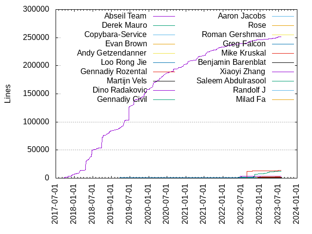
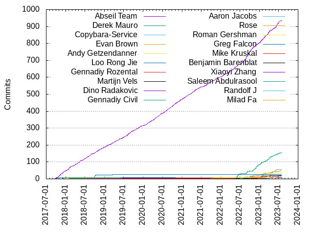

Authors
| Author | Commits (%) | + lines | - lines | First commit | Last commit | Age | Active days | # by commits |
|---|
| Abseil Team | 935 (55.85%) | 251665 | 70390 | 2017-09-19 | 2023-07-26 | 2135 days, 19:31:19 | 777 | 1 |
| Derek Mauro | 155 (9.26%) | 11958 | 5370 | 2017-09-27 | 2023-07-27 | 2129 days, 0:19:16 | 111 | 2 |
| Copybara-Service | 55 (3.29%) | 0 | 0 | 2022-05-31 | 2023-07-07 | 402 days, 5:06:32 | 43 | 3 |
| Evan Brown | 50 (2.99%) | 3334 | 1290 | 2022-05-04 | 2023-07-27 | 449 days, 1:07:24 | 46 | 4 |
| Andy Getzendanner | 36 (2.15%) | 3085 | 1483 | 2022-05-04 | 2023-06-28 | 420 days, 7:30:11 | 33 | 5 |
| Loo Rong Jie | 26 (1.55%) | 792 | 479 | 2017-11-27 | 2019-10-21 | 692 days, 19:58:30 | 19 | 6 |
| Gennadiy Rozental | 21 (1.25%) | 13790 | 857 | 2017-10-11 | 2023-06-27 | 2085 days, 2:23:22 | 20 | 7 |
| Martijn Vels | 19 (1.14%) | 1284 | 577 | 2022-07-15 | 2023-04-18 | 277 days, 0:08:12 | 15 | 8 |
| Dino Radakovic | 16 (0.96%) | 3274 | 93 | 2022-04-22 | 2023-06-26 | 429 days, 22:22:53 | 13 | 9 |
| Gennadiy Civil | 10 (0.60%) | 11 | 5 | 2017-10-05 | 2018-09-11 | 340 days, 23:46:11 | 5 | 10 |
| Aaron Jacobs | 10 (0.60%) | 92 | 149 | 2023-03-27 | 2023-04-11 | 15 days, 5:53:00 | 4 | 11 |
| Rose | 9 (0.54%) | 58 | 83 | 2023-02-10 | 2023-03-16 | 34 days, 4:12:39 | 4 | 12 |
| Roman Gershman | 9 (0.54%) | 74 | 37 | 2017-12-22 | 2022-01-27 | 1496 days, 19:31:44 | 6 | 13 |
| Greg Falcon | 8 (0.48%) | 390 | 97 | 2022-05-18 | 2023-06-12 | 389 days, 22:23:52 | 8 | 14 |
| Mike Kruskal | 7 (0.42%) | 2035 | 970 | 2022-12-06 | 2023-01-25 | 49 days, 18:44:50 | 5 | 15 |
| Benjamin Barenblat | 7 (0.42%) | 437 | 316 | 2022-05-12 | 2023-06-29 | 412 days, 23:27:18 | 7 | 16 |
| Xiaoyi Zhang | 6 (0.36%) | 0 | 0 | 2018-07-13 | 2020-02-21 | 587 days, 20:52:19 | 6 | 17 |
| Saleem Abdulrasool | 6 (0.36%) | 72 | 122 | 2022-06-08 | 2022-08-04 | 56 days, 22:37:25 | 6 | 18 |
| Randolf J | 6 (0.36%) | 19 | 13 | 2022-10-02 | 2022-10-07 | 4 days, 19:50:10 | 4 | 19 |
| Milad Fa | 6 (0.36%) | 156 | 14 | 2021-09-23 | 2023-02-15 | 509 days, 21:42:42 | 6 | 20 |
These didn't make it to the top: ahedberg, Uilian Ries, Phoebe Liang, Jonathan Cohen, Andrei Polushin, Vertexwahn, Tom Rybka, Samuel Benzaquen, Michael Shields, Laramie Leavitt, Jürg Billeter, John Paul Adrian Glaubitz, Tsige Solomon, Tom Manshreck, Tom Hughes, Matt Calabrese, Khem Raj, Jorg Brown, Joe Sylve, Fabrice Fontaine, Eric Fiselier, Connal de Souza, Christoph Cullmann, Christian Blichmann, Bronek Kozicki, Andy Soffer, zhangxy988, vslashg, pateldeev, misterg, kgotlinux, johnforestolson, Yannic, Valery Mironov, Thomas Köppe, Shaindel Schwartz, Po-Chuan Hsieh, Petter Strandmark, Pete Eigel, Pavel Samolysov, Niranjan Nilakantan, Mizux, Mark Barolak, Marcin Kowalczyk, Lawrence Wolf-Sonkin, James Y Knight, Ilya Tokar, Igor Poletaev, H. Vetinari, Fahrzin Hemmati, Evan Cox, Elijah Conners, David Majnemer, Dave MacLachlan, Daniel M. Katz, Christian Fersch, Chris Kennelly, Bulat Musin, Bradley C. Kuszmaul, Augusto Righetto, Ashley Hedberg, Anqi D, Andre Nguyen, Alex Strelnikov, Adrien Devresse, vocaviking, ulinzeng, nlewycky, niranjan-nilakantan, nik7273, jwest591, jueminyang, jglaser, imaiguo, i-do-cpp, hellowangsai, bfierz, Zach Toogood, Yuriy Chernyshov, Yesudeep Mangalapilly, Yasushi Saito, WolverinDEV, Wolf Behrenhoff, Wiktor Garbacz, Trish Lam, Tomas Trebicky, Tom Tan, Tobias Hammer, Thomas Klausner, Sungmann Cho, Stephan Dollberg, Stan Hu, Sinan Kaya, Silvio Traversaro, Sergei Trofimovich, Saran Tunyasuvunakool, SSE4, Rye Mutt, Russell Johnston, Romain Geissler, Richard Levasseur, Ren Zibei, Rei Shimizu, Rasesh Patel, Pavel Krajcevski, Paul Wankadia, Patrick Xia, Oleg Lyovin, Oleg Fatkhiev, Olaf van der Spek, Nicholas Bishop, Nao YONASHIRO, Milko Leporis, Mike Hommey, Michael Diamond, Michael Chiu, Matt Kulukundis, Matt Armstrong, Martin Blais, Martin, Markus Dreseler, László Nagy, Leonhard Markert, Kohei Otsuka, Kim Hyun, Keith Smiley, Jérôme Duval, Jose Renau, Jonathan Conder, Jeremy Ong, Jeremy Nimmer, Jasper Siepkes, Isuru Fernando, Igor Egorov, Hyun, Henner Zeller, Hao Peng, Gregor Jasny, Girts, Gabriel Ebner, GOGOYAO, Fu Zhe, Florin Crișan, Federico Scrinzi, Eric Barndollar, Ed Baunton, Dylan Madisetti, Dominic Chen, Devin Jeanpierre, Daniel Ylitalo, Corentin Le Molgat, Christy Norman, Cheng Zhao, Cameron Cawley, Calvin Ke, Bruno Pitrus, Bruce Mitchener, Boris Staletic, Bin Lan, Benjamin Buch, Ben Niu, Ben Cox, Bc. Martin Kubovčík, Arthur Milchior, Arkady Shapkin, Andrew Krasavin, Adrian Ostrowski, Adrian Imboden, Adam Phoenix
Only top 20 authors shown
Only top 20 authors shown
| Month | Author | Commits (%) | Next top 5 | Number of authors |
|---|
| 2023-07 | Abseil Team | 10 (35.71% of 28) | Derek Mauro, Evan Brown, Tom Rybka, Richard Levasseur, Phoebe Liang | 10 |
| 2023-06 | Abseil Team | 31 (44.93% of 69) | Copybara-Service, Derek Mauro, Tsige Solomon, Greg Falcon, Evan Brown | 18 |
| 2023-05 | Abseil Team | 15 (26.79% of 56) | Derek Mauro, Copybara-Service, Andy Getzendanner, Jürg Billeter, Niranjan Nilakantan | 16 |
| 2023-04 | Derek Mauro | 14 (29.79% of 47) | Abseil Team, Evan Brown, Aaron Jacobs, Vertexwahn, Dino Radakovic | 13 |
| 2023-03 | Abseil Team | 22 (36.07% of 61) | Derek Mauro, Aaron Jacobs, Gennadiy Rozental, Evan Brown, Dave MacLachlan | 15 |
| 2023-02 | Abseil Team | 21 (35.59% of 59) | Copybara-Service, Rose, Derek Mauro, Evan Brown, Yuriy Chernyshov | 14 |
| 2023-01 | Abseil Team | 21 (34.43% of 61) | Derek Mauro, Martijn Vels, Evan Brown, Mike Kruskal, Copybara-Service | 12 |
| 2022-12 | Derek Mauro | 15 (28.30% of 53) | Abseil Team, Mike Kruskal, Evan Brown, Jorg Brown, Copybara-Service | 19 |
| 2022-11 | Derek Mauro | 21 (31.34% of 67) | Abseil Team, Andy Getzendanner, Evan Brown, Tom Hughes, Copybara-Service | 14 |
| 2022-10 | Abseil Team | 26 (40.00% of 65) | Randolf J, Evan Brown, Gennadiy Rozental, Derek Mauro, Copybara-Service | 17 |
| 2022-09 | Abseil Team | 33 (55.00% of 60) | Derek Mauro, Martijn Vels, Evan Brown, Andy Getzendanner, Copybara-Service | 10 |
| 2022-08 | Abseil Team | 25 (55.56% of 45) | Derek Mauro, Copybara-Service, Gennadiy Rozental, Evan Cox, jwest591 | 12 |
| 2022-07 | Abseil Team | 13 (38.24% of 34) | Saleem Abdulrasool, Derek Mauro, Copybara-Service, Martijn Vels, Elijah Conners | 13 |
| 2022-06 | Derek Mauro | 16 (32.00% of 50) | Abseil Team, Dino Radakovic, Saleem Abdulrasool, Laramie Leavitt, Fabrice Fontaine | 16 |
| 2022-05 | Abseil Team | 19 (42.22% of 45) | Derek Mauro, Andy Getzendanner, Dino Radakovic, Greg Falcon, Evan Brown | 13 |
| 2022-04 | Abseil Team | 10 (83.33% of 12) | Dino Radakovic, Derek Mauro | 3 |
| 2022-03 | Abseil Team | 16 (72.73% of 22) | Thomas Klausner, Ren Zibei, Fabrice Fontaine, Calvin Ke, Ben Niu | 7 |
| 2022-02 | Abseil Team | 7 (87.50% of 8) | imaiguo | 2 |
| 2022-01 | Abseil Team | 12 (75.00% of 16) | Andrei Polushin, Roman Gershman | 3 |
| 2021-12 | Abseil Team | 7 (87.50% of 8) | Matt Armstrong | 2 |
| 2021-11 | Abseil Team | 14 (93.33% of 15) | Federico Scrinzi | 2 |
| 2021-10 | Abseil Team | 8 (53.33% of 15) | Milad Fa, Yesudeep Mangalapilly, Vertexwahn, Jérôme Duval | 5 |
| 2021-09 | Abseil Team | 13 (72.22% of 18) | Stan Hu, Oleg Fatkhiev, Milad Fa, Martin Blais, Markus Dreseler | 6 |
| 2021-08 | Abseil Team | 12 (85.71% of 14) | Leonhard Markert, Cheng Zhao | 3 |
| 2021-07 | Abseil Team | 7 (77.78% of 9) | Eric Barndollar, Bc. Martin Kubovčík | 3 |
| 2021-06 | Abseil Team | 9 (90.00% of 10) | Florin Crișan | 2 |
| 2021-05 | Abseil Team | 12 (92.31% of 13) | Gabriel Ebner | 2 |
| 2021-04 | Abseil Team | 14 (87.50% of 16) | Yasushi Saito, Jeremy Ong | 3 |
| 2021-03 | Abseil Team | 12 (80.00% of 15) | WolverinDEV, Christian Fersch, Christian Blichmann | 4 |
| 2021-02 | Abseil Team | 12 (70.59% of 17) | John Paul Adrian Glaubitz, Christian Fersch | 3 |
| 2021-01 | Abseil Team | 13 (92.86% of 14) | SSE4 | 2 |
| 2020-12 | Abseil Team | 12 (85.71% of 14) | Igor Poletaev | 2 |
| 2020-11 | Abseil Team | 13 (81.25% of 16) | ulinzeng, Roman Gershman, Kohei Otsuka | 4 |
| 2020-10 | Abseil Team | 16 (94.12% of 17) | hellowangsai | 2 |
| 2020-09 | Abseil Team | 14 (87.50% of 16) | Tomas Trebicky, Dominic Chen | 3 |
| 2020-08 | Abseil Team | 14 (100.00% of 14) | | 1 |
| 2020-07 | Abseil Team | 13 (61.90% of 21) | Mizux, jglaser, Tobias Hammer, Rei Shimizu, Igor Egorov | 8 |
| 2020-06 | Abseil Team | 13 (86.67% of 15) | kgotlinux, Po-Chuan Hsieh | 3 |
| 2020-05 | Abseil Team | 14 (77.78% of 18) | Nicholas Bishop, Khem Raj, Dylan Madisetti, Christoph Cullmann | 5 |
| 2020-04 | Abseil Team | 14 (70.00% of 20) | Zach Toogood, Po-Chuan Hsieh, Pavel Samolysov, László Nagy, Fu Zhe | 7 |
| 2020-03 | Abseil Team | 12 (70.59% of 17) | Augusto Righetto, i-do-cpp, Yannic, Pavel Samolysov | 5 |
| 2020-02 | Abseil Team | 12 (70.59% of 17) | kgotlinux, Xiaoyi Zhang, Sinan Kaya, Khem Raj, Andre Nguyen | 6 |
| 2020-01 | Abseil Team | 9 (81.82% of 11) | nlewycky, Andre Nguyen | 3 |
| 2019-12 | Abseil Team | 8 (88.89% of 9) | Rye Mutt | 2 |
| 2019-11 | Abseil Team | 10 (90.91% of 11) | Adrian Ostrowski | 2 |
| 2019-10 | Abseil Team | 10 (66.67% of 15) | Joe Sylve, vslashg, Nao YONASHIRO, Loo Rong Jie | 5 |
| 2019-09 | Abseil Team | 13 (92.86% of 14) | Sungmann Cho | 2 |
| 2019-08 | Abseil Team | 16 (88.89% of 18) | Yannic, Martin | 3 |
| 2019-07 | Abseil Team | 10 (90.91% of 11) | Matt Calabrese | 2 |
| 2019-06 | Abseil Team | 9 (39.13% of 23) | Michael Shields, Xiaoyi Zhang, Shaindel Schwartz, Gennadiy Rozental, Rasesh Patel | 9 |
| 2019-05 | Abseil Team | 11 (84.62% of 13) | Roman Gershman, Christoph Cullmann | 3 |
| 2019-04 | Abseil Team | 11 (100.00% of 11) | | 1 |
| 2019-03 | Abseil Team | 10 (66.67% of 15) | nik7273, Michael Chiu, Loo Rong Jie, Girts, Derek Mauro | 6 |
| 2019-02 | Abseil Team | 6 (100.00% of 6) | | 1 |
| 2019-01 | Abseil Team | 12 (70.59% of 17) | ahedberg, Uilian Ries, Tom Tan, Boris Staletic, Alex Strelnikov | 6 |
| 2018-12 | Abseil Team | 11 (64.71% of 17) | Uilian Ries, ahedberg, Mark Barolak | 4 |
| 2018-11 | Abseil Team | 9 (100.00% of 9) | | 1 |
| 2018-10 | Abseil Team | 14 (53.85% of 26) | Loo Rong Jie, Ashley Hedberg, ahedberg, Xiaoyi Zhang, Matt Calabrese | 8 |
| 2018-09 | Abseil Team | 6 (54.55% of 11) | Loo Rong Jie, Gennadiy Civil, Stephan Dollberg | 4 |
| 2018-08 | Abseil Team | 17 (62.96% of 27) | Loo Rong Jie, Derek Mauro, vocaviking | 4 |
| 2018-07 | Abseil Team | 9 (39.13% of 23) | Loo Rong Jie, ahedberg, Xiaoyi Zhang, Olaf van der Spek, Jonathan Cohen | 9 |
| 2018-06 | Abseil Team | 11 (68.75% of 16) | Loo Rong Jie, Milko Leporis, Derek Mauro, Alex Strelnikov | 5 |
| 2018-05 | Abseil Team | 14 (82.35% of 17) | Petter Strandmark, johnforestolson | 3 |
| 2018-04 | Abseil Team | 12 (85.71% of 14) | Jonathan Cohen, Bruce Mitchener | 3 |
| 2018-03 | Abseil Team | 10 (90.91% of 11) | bfierz | 2 |
| 2018-02 | Abseil Team | 11 (78.57% of 14) | Gregor Jasny, Derek Mauro, Daniel M. Katz | 4 |
| 2018-01 | Abseil Team | 17 (58.62% of 29) | Roman Gershman, Pete Eigel, Jonathan Cohen, Bulat Musin, johnforestolson | 7 |
| 2017-12 | Abseil Team | 13 (72.22% of 18) | zhangxy988, Roman Gershman, Daniel Ylitalo | 4 |
| 2017-11 | Abseil Team | 15 (65.22% of 23) | Loo Rong Jie, Gennadiy Civil, Wolf Behrenhoff, Pavel Krajcevski, Jonathan Cohen | 7 |
| 2017-10 | Abseil Team | 13 (44.83% of 29) | Gennadiy Civil, Bronek Kozicki, vslashg, misterg, jueminyang | 10 |
| 2017-09 | Abseil Team | 5 (55.56% of 9) | misterg, Derek Mauro, Ben Cox, Adrien Devresse | 5 |
| Year | Author | Commits (%) | Next top 5 | Number of authors |
|---|
| 2023 | Abseil Team | 132 (34.65% of 381) | Derek Mauro, Copybara-Service, Evan Brown, Andy Getzendanner, Aaron Jacobs | 53 |
| 2022 | Abseil Team | 201 (42.14% of 477) | Derek Mauro, Evan Brown, Andy Getzendanner, Copybara-Service, Martijn Vels | 62 |
| 2021 | Abseil Team | 133 (81.10% of 164) | Milad Fa, John Paul Adrian Glaubitz, Christian Fersch, Yesudeep Mangalapilly, Yasushi Saito | 24 |
| 2020 | Abseil Team | 156 (79.59% of 196) | kgotlinux, Po-Chuan Hsieh, Pavel Samolysov, Mizux, Khem Raj | 33 |
| 2019 | Abseil Team | 126 (77.30% of 163) | Michael Shields, Joe Sylve, Xiaoyi Zhang, Shaindel Schwartz, Loo Rong Jie | 28 |
| 2018 | Abseil Team | 141 (65.89% of 214) | Loo Rong Jie, ahedberg, Uilian Ries, Roman Gershman, Jonathan Cohen | 30 |
| 2017 | Abseil Team | 46 (58.23% of 79) | Gennadiy Civil, Bronek Kozicki, zhangxy988, misterg, Roman Gershman | 20 |
| Domains | Total (%) |
|---|
| google.com | 1414 (84.47%) |
|---|
| gmail.com | 103 (6.15%) |
|---|
| users.noreply.github.com | 76 (4.54%) |
|---|
| tum.de | 4 (0.24%) |
|---|
| physik.fu-berlin.de | 4 (0.24%) |
|---|
| hotmail.com | 4 (0.24%) |
|---|
| codethink.co.uk | 4 (0.24%) |
|---|
| spamcop.net | 3 (0.18%) |
|---|
| microsoft.com | 3 (0.18%) |
|---|
| kde.org | 3 (0.18%) |
|---|